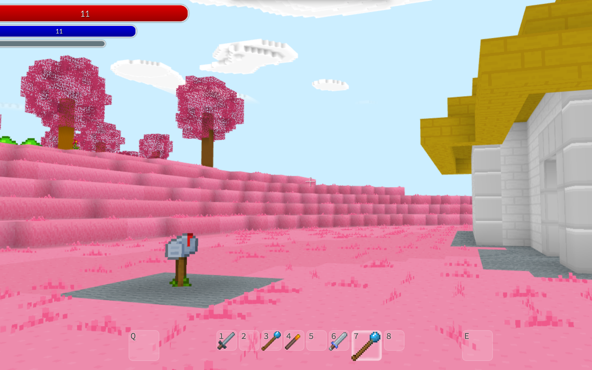

<!DOCTYPE html>
<html lang="en">
  <head>
    <meta charset="utf-8" />
    <meta name="viewport" content="width=device-width, initial-scale=1.0, maximum-scale=1.0, user-scalable=no" />

    <title>Four Years of JS Procedural Generation</title>
    <link rel="stylesheet" href="./css/reveal.css" />
    <link rel="stylesheet" href="./css/theme/solarized.css" id="theme" />
    <link rel="stylesheet" href="./css/highlight/zenburn.css" />
    <link rel="stylesheet" href="./css/print/paper.css" type="text/css" media="print" />
    <link rel="stylesheet" href="./assets/style.css" />

  </head>
  <body>
    <div class="reveal">
      <div class="slides"><section  data-markdown><script type="text/template">


> # FOUR YEARS OF <br> JS PROC-GEN
<!-- .element: class="invert" -->


<br>

##### Andy Hall ・ <a href="https://twitter.com/fenomas" target="_blank">@fenomas</a>
##### JSConf Tokyo, Nov 2019


<!-- ###################################################### -->
<!-- ###################################################### -->
<!-- ###################################################### -->
</script></section><section ><section data-markdown><script type="text/template">
<br><br>

> ## Proc-gen™ ?
<!-- .element: class="invert" -->

###### (aka Procedurally Generated Content, PCG, ...)

<br>

### ↓


</script></section><section data-markdown><script type="text/template">
<!-- .slide: data-background="./static/img/minecraft-classic.png" -->

<br>

> #### "contents made by an algorithm"
<!-- .element: class="invert" -->

</script></section><section data-markdown><script type="text/template">

#### Such as: <br><span class="smallest">(click and drag)</span>
<!-- .element: class="left" style="" -->

<iframe frameborder="0" width="800px" height="800px" data-src="./static/demos/projectron/"></iframe>
<!-- .element: class="right" -->


</script></section><section data-markdown><script type="text/template">
### About this talk:

<br>

 * High-level lessons for proc-gen
 * Mistakes I've made
 * Demos!  
   <span class="smaller">(source code links at the end)</span>


</script></section><section data-markdown><script type="text/template">
<br>

### About me:

<br>

* <a href="https://twitter.com/fenomas" target="_blank">@fenomas</a>
* currently: making a game / game engine
* formerly: tech evangelist at Adobe Japan
* よろしく etc.

<br>

### →


<!-- ###################################################### -->
<!-- ###################################################### -->
<!-- ###################################################### -->
</script></section></section><section ><section data-markdown><script type="text/template">
#### Point 1:

<br>

> ### Dumb algorithms are Fine™
<!-- .element: class="invert" -->

<br>

### ↓

</script></section><section data-markdown><script type="text/template">
### Quiz question!

Guess what algorithm made this thing:

<iframe frameborder="0" width="450px" height="450px" data-src="./static/demos/projectron/small.html"></iframe>
<!-- .element: style="margin: 20px;" -->


</script></section><section data-markdown><script type="text/template">
### Answer:

<br>

>   1. Randomly change any vertex
>   2. Did rendered image get better?
>   3. If not, change it back
> 
> <br> (🔁 repeat a few million times)


</script></section><section data-markdown><script type="text/template">
<!-- .slide: data-background="./static/img/brain.png" -->
> ###### galaxy brain algorithm
<!-- .element: class="invert" -->

<br><br><br>
</script></section><section data-markdown><script type="text/template">

#### What it looks like in action:

> <a href="https://andyhall.github.io/glsl-projectron/" target="_blank">github:andyhall/glsl-projectron</a>


</script></section><section data-markdown><script type="text/template">
#### Proc-gen is about *creative* use
#### of *boring* algorithms

-------
<!-- .element style="margin: 80px;" -->

Fancy algos don't make the content interesting! 
Imagination and iteration are your key weapons. 


</script></section><section data-markdown><script type="text/template">
#### Aside: AI is mostly the opposite

<br>

With *ML* and *AI*, algorithms are everything -  
but you have little control over what comes out.

This talk won't cover ML/AI.

</script></section><section data-markdown><script type="text/template">
<br><br><br>

### So, how to get started?

<br><br>

### →


<!-- ###################################################### -->
<!-- ###################################################### -->
<!-- ###################################################### -->
</script></section></section><section ><section data-markdown><script type="text/template">
#### Point 2:

<br>

> ### Think in Function Space™
<!-- .element: class="invert" -->

<br>

### ↓

</script></section><section data-markdown><script type="text/template">
#### In practice, using proc-gen <br> means replacing **content**...

<br>

#### ...with **functions** that <br> return content.
<!-- .element: class="fragment" data-fragment-index="1" -->

</script></section><section data-markdown><script type="text/template">
> `slime = `
<!-- .element: style="" -->

↓  
<!-- .element: class="fragment" data-fragment-index="1" -->

> `makeSlime = () => ` 
<!-- .element: style="width: 85%;" class="fragment" data-fragment-index="1" -->

↓
<!-- .element: class="fragment" data-fragment-index="2" -->

> `makeSlime => 　`
`, ` 
`, ` 
`...`
<!-- .element: style="width: 95%;" class="fragment" data-fragment-index="2" -->
</script></section><section data-markdown><script type="text/template">
#### <b>But:</b> any function can be
#### considered a *mapping*:

> 


</script></section><section data-markdown><script type="text/template">
```js
function makeSlime() {
   var color = 255 * Math.random()
   var size = 1 + Math.random()
  // ...
}
```
<!-- .element: style="width: 90%;" --> 


</script></section><section data-markdown><script type="text/template">
<!-- .slide: data-background="./static/img/function-space.png" -->


</script></section><section data-markdown><script type="text/template">
#### Proc-gen can be considered
#### a *function* mapping *inputs* onto 
#### an *n-D space* of content.
</script></section><section data-markdown><script type="text/template">
#### Calling the function
#### samples the space!

<br>

> `makeSlime() // `


</script></section><section data-markdown><script type="text/template">

> <a href="javascript:demo('voxels')"></a>
<!-- .element: style="width: 50%;" --> 

#### and now for a non-trivial example


</script></section><section data-markdown><script type="text/template">
##### A procedural world is a bigger task,
##### but still just a *mapping*:

```js
function voxel(x, y, z) {

   // ...

}
```
<!-- .element: style="margin-top: 80px; width: 80%;" --> 


</script></section><section data-markdown><script type="text/template">

<br><br><br>

### Next: more complexity!

<br><br>

### →


<!-- ###################################################### -->
<!-- ###################################################### -->
<!-- ###################################################### -->
</script></section></section><section ><section data-markdown><script type="text/template">
#### Point 3:

<br>

> ## Use Hidden Layers
<!-- .element: class="invert" -->

<br>

### ↓
</script></section><section data-markdown><script type="text/template">
#### Consider a new problem domain:

# **procedural music**


</script></section><section data-markdown><script type="text/template">
#### In function space:

"just" a 1D mapping  of *time* onto *pitch* 

<br>


</script></section><section data-markdown><script type="text/template">
> <a href="javascript:demo('music1')"><span style="font-size:200%">music demo!</span></a>
<!-- .element: style="width: 70%;" --> 
</script></section><section data-markdown><script type="text/template">
#### But a simple mapping feels
#### repetitive and homogeneous


</script></section><section data-markdown><script type="text/template">
#### colloquially: the
## "thousand bowls <br> of oatmeal" 
#### problem
</script></section><section data-markdown><script type="text/template">
#### Solution: **chord progressions**

<br> 


</script></section><section data-markdown><script type="text/template">
### With chords:

> <a href="javascript:demo('music2')"></a>
<!-- .element: style="width: 70%;" --> 


</script></section><section data-markdown><script type="text/template">
### Or go further:


</script></section><section data-markdown><script type="text/template">
#### No<b></b>te: in <a href="javascript:demo('voxels')">procedural worlds</a> 
#### hidden layers make <em>"biomes"</em>


</script></section><section data-markdown><script type="text/template">
<br><br><br>

### Now to make it shine!

<br><br>

### →


<!-- ###################################################### -->
<!-- ###################################################### -->
<!-- ###################################################### -->
</script></section></section><section ><section data-markdown><script type="text/template">
#### Point 4:

<br>

> ## Make a Playground™
<!-- .element: class="invert" -->

<br>

### ↓
</script></section><section data-markdown><script type="text/template">
### Great proc-gen comes from
### *iteration* and *trial and error*

</script></section><section data-markdown><script type="text/template">
#### A playground is a dev environment
#### for checking how *any set of inputs*
#### maps to an *output*

<br>

<iframe frameborder="0" width="420px" height="150px" 
  data-src="./static/demos/fake-playground/"
  style="transform: scale(1.75); border: 3px solid #444;"></iframe>

</script></section><section data-markdown><script type="text/template">
### Effectively: 
## **unit tests** for 
## procedural content!


</script></section><section data-markdown><script type="text/template">
<br>

#### Cursed but real example:

> #### <a href="./static/demos/synth" target="synth_demo">Image synthesis playground</a>
<!-- .element style="width: 90%;" -->

<br>

##### (warning: cursed)

<br>


</script></section><section data-markdown><script type="text/template">
#### Alternate approach:
### HMR / hot-reloading

<br>

> ### <a href="javascript:demo('music3')">(HMR for music)</a>
 
<br>


</script></section><section data-markdown><script type="text/template">
#### Hot take:

> **JS is uniquely good for proc-gen!**  
<!-- .element: style="width: 95%; font-size: 135%; margin: 50px auto;" -->

##### because front-end devs are so good
##### at whipping up playgrounds.
##### Use this power!

### →


<!-- ###################################################### -->
<!-- ###################################################### -->
<!-- ###################################################### -->
</script></section></section><section  data-markdown><script type="text/template">
<br>

> #### Summary
<!-- .element: class="invert" -->

<br>

 * Dumb algorithms are Fine
 * Think in Function Space  
 * Use Hidden Layers  
 * Make a Playground  

<br>
<br>


</script></section><section ><section data-markdown><script type="text/template"><!-- event version -->

#### Demos and source ⇢ <a href="https://twitter.com/fenomas" target="_blank">@fenomas</a>

<br>

> ### Thank you!
<!-- .element: class="invert fragment" data-fragment-index="1" -->
<br>

##### Andy Hall
<!-- .element: class="fragment" data-fragment-index="1" -->
###### JSConf Tokyo, Nov 2019
<!-- .element: class="fragment" data-fragment-index="1" -->


</script></section><section data-markdown><script type="text/template">
<!-- posterity version -->

##### Demos and source:
#### <a href="http://aphall.com/2019/11/jsconf/" target="_blank">aphall.com/2019/11/jsconf/</a>


> ### Thank you!
<!-- .element: class="invert" style="margin: 80px 0;" -->


###### <br>Andy Hall ・ <a href="https://twitter.com/fenomas" target="_blank">@fenomas</a>
###### JSConf Tokyo, Nov 2019
</script></section></section></div>
    </div>

    <script src="./js/reveal.js"></script>

    <script>
      function extend() {
        var target = {};
        for (var i = 0; i < arguments.length; i++) {
          var source = arguments[i];
          for (var key in source) {
            if (source.hasOwnProperty(key)) {
              target[key] = source[key];
            }
          }
        }
        return target;
      }

      // Optional libraries used to extend on reveal.js
      var deps = [
        { src: './plugin/markdown/marked.js', condition: function() { return !!document.querySelector('[data-markdown]'); } },
        { src: './plugin/markdown/markdown.js', condition: function() { return !!document.querySelector('[data-markdown]'); } },
        { src: './plugin/highlight/highlight.js', async: true, callback: function() { hljs.initHighlightingOnLoad(); } },
        { src: './plugin/zoom-js/zoom.js', async: true },
        { src: './plugin/notes/notes.js', async: true },
        { src: './plugin/math/math.js', async: true }
      ];

      // default options to init reveal.js
      var defaultOptions = {
        controls: true,
        progress: true,
        history: true,
        center: true,
        transition: 'default', // none/fade/slide/convex/concave/zoom
        dependencies: deps
      };

      // options from URL query string
      var queryOptions = Reveal.getQueryHash() || {};

      var options = extend(defaultOptions, {"width":1280,"height":800,"controls":true,"controlsTutorial":true,"progress":false,"slideNumber":false,"hash":true,"history":false,"keyboard":true,"overview":true,"center":true,"transition":"slide","transitionSpeed":"fast","backgroundTransition":"fade"}, queryOptions);
    </script>

    <script src="./assets/script.js"></script>

    <script>
      Reveal.initialize(options);
    </script>
  </body>
</html>
